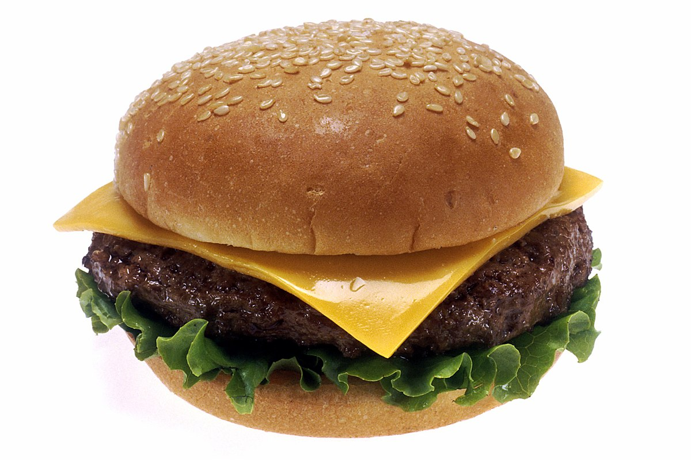

Burgers - Home Made
Home

Home Made Burgers!!
List of Ingredients
Items below are to make the burger patty (should make 4 patties)
- 1 Large Egg
- ½ teaspoon of salt
- ½ teaspoon ground black pepper
- 1 pound ground beef
- ½ cup fin dry bread crumbs
Remaining items are for the rest of the burger
- Brioche Bun
- Lettuce
- Tomato
- Cheese
- Onions
Cooking Steps
- Preheat an outdoor grill for high heat and lightly oil grate
- Whisk egg, salt, and pepper together in a medium bowl.
- Add ground beef and bread crumbs; mix with your hands or a fork until well blended.
- Form into four 3/4-inch-thick patties
- Place patties on the preheated grill. Cover and cook 6 to 8 minutes per side, or to desired doneness. An instant-read thermometer inserted into the center should read at least 160 degrees F (70 degrees C).
- Once patty is cooked, start building the rest of the Burger
- Place the patty on to bun
- Add cheese, lettuce, tomato, and onions on to the patty
- Eat the burger